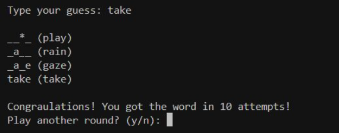
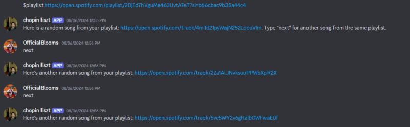
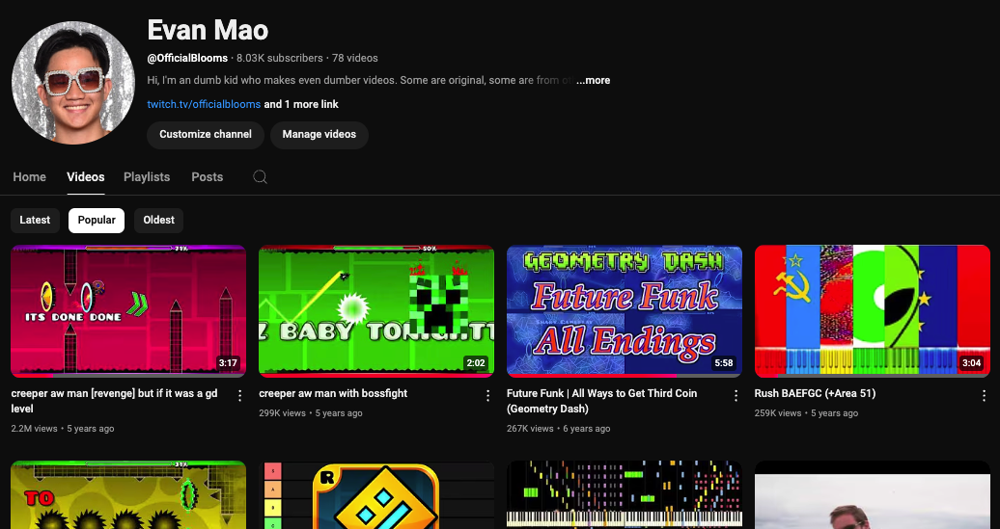
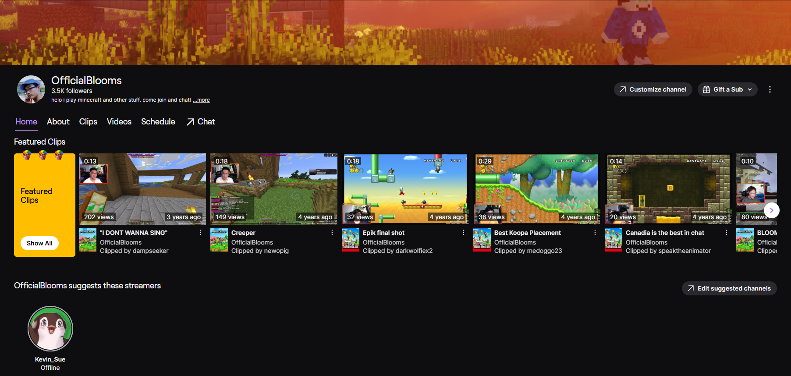

Evan Mao
Junior Software Developer @ Amazon,
Comp Sci @ University of Washington Seattle
Junior Software Developer @ Amazon,
Comp Sci @ University of Washington Seattle
Hi, I'm Evan Mao. Welcome to my website! I currently live in Seattle, Washington, but I am actually Chinese-Canadian. I was born and raised in Edmonton, Alberta, Canada until I moved to America in 2021. My life has drastically changed since then, but I definitely don't regret the decision to move!
I study Computer Science at the University of Washington in Seattle, with a minor in Music. I have a strong passion in problem solving, tackling new problems, and making a positive impact on the community around me with my technical skills! I continue to be inspired by all the advances in technology in my field.
I also play Piano and Bass Trombone! I am part of the University of Washington Wind Ensemble and Trombone Choir, playing alongside many other wonderful musicians like me and sharing our passion for music for hundreds to hear. I also used to attend many classical piano competitions, winning many gold medals. Here is me playing with an orchestra for a concert with other competition winners! I still practice piano occasionally, but I mostly do trombone now.
Some other hobbies I have include skiing, video games, admiring cool cars, meeting new people, and playing Catan!

This Wordle program is a Java project I started in High School that I continue to refine as I learn more about programming in university! It prompts the user to guess a word of desired length (from 3 to 6 letters) and gives feedback on the correctness of the guess, like the real Wordle, except more flexible! This program also features hard mode as well! I'm currently working on implementing it into its own website so that it can be played online!

Chopin Liszt (sounds like "shopping list") is a passion project to practice coding in
Python, and also further educate myself on topics
I am passionate about: classical music, and the Beatles! The bot includes features such as picking
out a random song from a user-specificied Spotify
playlist, posting random supercars alongside information about them from Google Gemini, and a daily
message that includes history of a random Beatles
and classical song!
FULL DISCLAIMER: I haven't actually gotten into deploying the bot for users to test, so you
can't actually use it at the moment. I'm currently working
on making it happen, as well as implementing more features and commands to make the bot more
interactive and enjoyable for users with similar interests as me!
You can find many more of my coding projects in my GitHub page!

I have a Youtube channel where I post all sorts of things related to my hobbies. I have a Geometry Dash video with over 2.2 million views, a three-year music transcription project on one of the "games" on the Nintendo Wii, and recently, I spent over three days making a Minecraft video showcasing a relaxing parkour course with giant mob builds and beautiful scenery!

I used to be a live streamer on Twitch, where I would stream games very frequently and talk with my viewers, new or returning, about many different things, and just having a great time! Unfortunately, due to college, I haven't had the chance to stream, but I hope to get back into it soon! Here is a video of an event I hosted on the popular video game Minecraft, where my viewers would fight each other and win prizes. It was a super fun event!